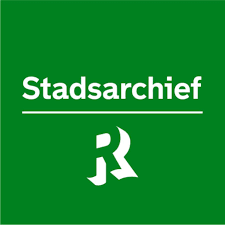
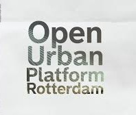
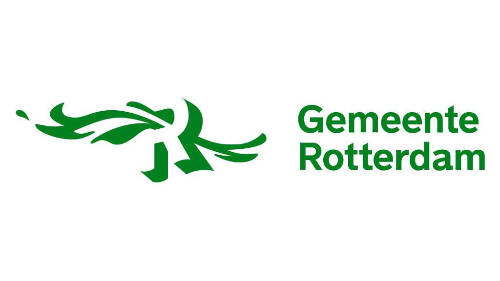

We willen een origineel product ontwikkelen met behulp van nieuwe technieken en geven daarbij ruimte aan vernieuwende oplossingen.
De Citiverse is het digitale verlengstuk van Rotterdam. Door fysieke ruimte en digitale gegevens te verbinden, maken we stedelijke ontwikkeling inzichtelijk, inclusief en toekomstgericht.
Onze eerste sprint"Hoe kunnen wij jongeren en volwassenen van 16 t/m 30 jaar oud, meer over de toekomst en of geschiedenis vertellen op een educatieve en interactieve manier?"
Binnen de Gemeente Rotterdam bestaan verschillende initiatieven die zich richten op het toegankelijk maken en benutten van stedelijke en historische data.
Het Stadsarchief Rotterdam beheert een omvangrijke collectie historische documenten, zoals kaarten, schilderijen en foto’s. Hoewel deze waardevolle bronnen beschikbaar zijn, wordt nog gezocht naar een duurzame en structurele manier om ze effectief in te zetten voor educatieve doeleinden.
Er is behoefte aan een aanpak waarbij ontwikkelde producten behouden blijven en verder kunnen worden uitgebouwd, zodat kennis en investeringen niet verloren gaan. Het Open Urban Platform fungeert als een vooruitstrevende infrastructuur voor het ontsluiten van stedelijke data voor maatschappelijk gebruik. Het platform biedt apps en diensten die werken volgens vastgestelde open standaarden. Technisch gezien is er een solide basis aanwezig om data toegankelijk en herbruikbaar te maken.
Binnen de Gemeente Rotterdam loopt daarnaast het Citiverse-project, waarin stedelijke data via open standaarden wordt samengebracht in een virtuele omgeving. De technische mogelijkheden worden als beheersbaar beschouwd. De grotere uitdaging ligt in organisatiebrede samenwerking, culturele adoptie en het verbinden van verschillende afdelingen.
Tegelijkertijd wordt de doelgroep jongeren (16–30 jaar) nog beperkt bereikt. Hoewel zij digitaal vaardig zijn en interesse tonen in interactieve en educatieve toepassingen, is hun betrokkenheid bij stedelijke en historische data-initiatieven nog onvoldoende.
Externe factoren zoals digitale trends, privacywetgeving en de noodzaak tot actieve participatie van jongeren spelen hierbij een belangrijke rol. Samenvattend is er een sterke technologische en inhoudelijke basis aanwezig, maar ligt de kernuitdaging in structurele samenwerking, duurzame doorontwikkeling en het beter betrekken van jongeren bij deze initiatieven.
In de gewenste situatie willen wij een jongeren en volwassenen tussen de 16 t/m 30 jaar oud kennis laten maken met de geschiedenis en of toekomst van de stad Rotterdam en meer. Deze kennis willen wij opeen educatieve en leuke manier over brengen bij de gebruiker en doelgroep. Bij gebruik van ons product willen wij ook nieuwe data genereren zodat er verdere onderzoek uitgevoerd kan worden op basis van het onderwerp.
Wij willen jongeren en volwassenen tussen de 16 en 35 jaar op een educatieve en interactieve manier kennis laten maken met de geschiedenis en toekomst van Rotterdam.
Dit doel is behaald wanneer binnen een vooraf bepaalde periode (bijvoorbeeld 6 maanden na lancering) een aantoonbare groep uit de doelgroep het product actief gebruikt en een meerderheid aangeeft dat zij nieuwe kennis hebben opgedaan en de ervaring als leerzaam en leuk ervaren. Daarnaast wordt er interactiedata verzameld die gebruikt kan worden voor vervolgonderzoek en doorontwikkeling van het concept.
We willen een origineel product ontwikkelen met behulp van nieuwe technieken en geven daarbij ruimte aan vernieuwende oplossingen.
Wij willen een product creëren die met plezier gebruikt kan worden. Interactieve componenten die info geven op een leuke manier en zonder te veel zorgen.
We willen door interactieve VR en game omgevingen te gebruiken nieuwsgierigheid stimuleren en zo diepere betrokkenheid bij stedelijke ontwikkeling creëren.
We willen een product dat deels inclusief is door rekening te houden met bijvoorbeeld taal, leeftijd, cultuur of gender.
We willen de privacy zo goed mogelijk waarborgen waar mogelijk voor de burger. We zullen de burger anonimiteit als optie geven, en encryptie gebruiken voor gevoelige data.
De taken die uitgevoerd zullen worden.
De taken die we verwachten uitvoeren zullen zijn:
Taken of functionaliteiten die uitdrukkelijk zijn uitgesloten om misverstanden of 'scope creep' te voorkomen.
Wat uitdrukkelijk is uitgesloten:
Factoren zoals budget, tijdlijn en beschikbare middelen die de uitvoering van het project beïnvloeden.
De beperkingen:
In samenwerking met deze partners bouwen wij aan een toekomstgerichte en inclusieve digitale stad. Door kennis, data en expertise te bundelen, versterken we elkaar en creëren we duurzame impact.



We willen een origineel product ontwikkelen met behulp van nieuwe technieken en geven daarbij ruimte aan vernieuwende oplossingen.